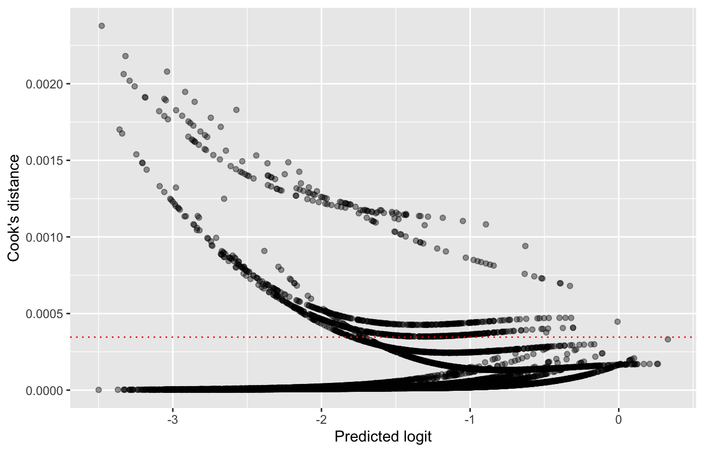

library(tidyverse)
library(haven)
library(psych)
library(broom)
library(performance)6 Logistic Regression
Linear regression assumes a continuous outcome. Many outcomes in education are binary instead: a student graduates or does not, enrolls in college or does not, takes an advanced course or does not. Logistic regression models the probability of a binary outcome. In this chapter, we fit a series of logistic models, interpret the results as log odds, odds ratios, and predicted probabilities, and then check model fit and assumptions.
6.1 The data
We use data from the base year (2002) of the Education Longitudinal Study (ELS:2002), a nationally representative survey of U.S. high school sophomores. Our outcome is whether a student had ever taken part in an Advanced Placement (AP) program. We consider three predictors:
- whether the student had ever repeated a grade from kindergarten through 10th grade
- the student’s score on a standardized math and reading test
- the student’s family socioeconomic status (SES), in quartiles
els <- read_dta("data/ELS_Logistic.dta")6.1.1 Data cleaning
ELS uses negative numbers for different kinds of missing data (for example, -9 for “missing” and -4 for “nonrespondent”). Grade retention also has codes of 97 to 99 for responses that could not be collected. We use case_when() to recode each variable. Any value not listed in case_when() becomes NA. We also center the test score at its mean, which makes the intercept easier to interpret.
els_clean <- els |>
transmute(
ap = case_when(
bys33a == 1 ~ 1,
bys33a == 0 ~ 0
),
retained = case_when(
bygrdrpt == 0 ~ "No",
bygrdrpt %in% c(1, 2) ~ "Yes"
),
retained = factor(retained, levels = c("No", "Yes")),
ses = case_when(
byses1qu == 1 ~ "Lowest",
byses1qu == 2 ~ "Second",
byses1qu == 3 ~ "Third",
byses1qu == 4 ~ "Highest"
),
ses = factor(ses, levels = c("Lowest", "Second", "Third", "Highest")),
test = if_else(bytxcstd < 0, NA, bytxcstd)
) |>
drop_na() |>
mutate(test_c = test - mean(test))transmute() works like mutate(), but it keeps only the variables it creates. drop_na() keeps students with complete data on all four variables, so every model in this chapter uses the same sample.
els_clean |> count(ap)els_clean |> count(retained)els_clean |> count(ses)describe(els_clean$test)About 19% of students had taken part in an AP program.
6.2 A single binary predictor
Is grade retention related to the odds of AP participation? In R, glm() with family = binomial fits a logistic regression:
logistic1 <- glm(ap ~ retained, family = binomial, data = els_clean)
summary(logistic1)
Call:
glm(formula = ap ~ retained, family = binomial, data = els_clean)
Coefficients:
Estimate Std. Error z value Pr(>|z|)
(Intercept) -1.40688 0.02483 -56.658 < 2e-16 ***
retainedYes -0.57281 0.08843 -6.478 9.32e-11 ***
---
Signif. codes: 0 '***' 0.001 '**' 0.01 '*' 0.05 '.' 0.1 ' ' 1
(Dispersion parameter for binomial family taken to be 1)
Null deviance: 11187 on 11564 degrees of freedom
Residual deviance: 11140 on 11563 degrees of freedom
AIC: 11144
Number of Fisher Scoring iterations: 46.2.1 Log odds
The coefficients are on the log odds (logit) scale. A negative coefficient means lower odds than the reference group, and a positive one means higher odds. Here, students who repeated a grade had significantly lower odds of AP participation than students who did not. Beyond the direction and significance of the effect, log odds are hard to interpret directly.
6.2.2 Odds ratios
Exponentiating a logit coefficient gives an odds ratio (OR):
exp(coef(logistic1))(Intercept) retainedYes
0.2449054 0.5639398 An OR of 1 means no difference. An OR below 1 means lower odds, and an OR above 1 means higher odds. For an OR below 1, subtracting it from 1 gives the percent decrease: 1 − 0.56 = 0.44. Thus, the odds of AP participation were about 44% lower for students who had repeated a grade.
tidy() from the broom package returns odds ratios and their 95% confidence intervals for the whole model in one step. An interval that does not include 1 (not 0) is significant at the .05 level.
tidy(logistic1, exponentiate = TRUE, conf.int = TRUE)6.2.3 Predicted probabilities
Odds ratios are relative. Predicted probabilities are often easier to communicate. To convert a logit to a probability, we use the inverse logit: exp(logit) / (1 + exp(logit)). For students who were not retained, the logit is just the intercept:
b <- coef(logistic1)
exp(b[1]) / (1 + exp(b[1]))(Intercept)
0.1967261 For retained students, we add the coefficient for retainedYes to the intercept:
exp(b[1] + b[2]) / (1 + exp(b[1] + b[2]))(Intercept)
0.1213518 The predicted probability of AP participation is about 20% for students who were not retained and about 12% for those who were. predict() with type = "response" does the same math for us:
predict(logistic1,
newdata = tibble(retained = c("No", "Yes")),
type = "response") 1 2
0.1967261 0.1213518 6.3 Adding a continuous predictor
Next, we add the centered test score. The research question changes slightly: do the odds of AP participation differ by grade retention, after adjusting for achievement?
logistic2 <- glm(ap ~ retained + test_c, family = binomial, data = els_clean)
tidy(logistic2, exponentiate = TRUE, conf.int = TRUE)Two results stand out. First, each one-point increase in test score multiplies the odds of AP participation by about 1.07 (a 7% increase). Second, the OR for grade retention is now close to 1 and not significant. This suggests that the lower AP participation of retained students in Model 1 may be largely explained by differences in achievement.
Because the test score is centered, the predicted probabilities below are for students with an average score:
predict(logistic2,
newdata = tibble(retained = c("No", "Yes"), test_c = 0),
type = "response") 1 2
0.1712472 0.1674751 6.4 A multi-category predictor
SES has four categories. R creates three dummy variables and uses the first level of the factor (Lowest) as the reference group:
logistic3 <- glm(ap ~ ses, family = binomial, data = els_clean)
tidy(logistic3, exponentiate = TRUE, conf.int = TRUE)Each OR compares one quartile to the lowest quartile. For example, students in the highest SES quartile had about 2.2 times the odds of AP participation of students in the lowest quartile.
6.4.1 Changing the reference group
The choice of reference group should follow the research question. relevel() sets a new one. Here, we compare each quartile to the highest:
els_relevel <- els_clean |>
mutate(ses = relevel(ses, ref = "Highest"))
glm(ap ~ ses, family = binomial, data = els_relevel) |>
tidy(exponentiate = TRUE, conf.int = TRUE)The model is the same; only the comparisons change.
6.5 Putting it together
logistic4 <- glm(ap ~ retained + ses + test_c, family = binomial,
data = els_clean)
tidy(logistic4, exponentiate = TRUE, conf.int = TRUE)After adjusting for test scores, none of the SES comparisons is significant. Much like grade retention, the SES differences in Model 3 appear to run largely through achievement.
To test whether SES adds to the model as a whole, we compare Model 2 and Model 4 with a likelihood ratio test:
anova(logistic2, logistic4, test = "Chisq")The test is significant, so SES as a set does improve the model, even though no single comparison with the lowest quartile is significant. With more than 11,000 students, small differences can reach significance. The odds ratios suggest these differences are modest.
6.6 Model fit and assumptions
6.6.1 Hosmer-Lemeshow test
The Hosmer-Lemeshow test groups students by their predicted probability and compares predicted and observed counts within each group. A significant result suggests poor fit. performance_hosmer() from the performance package runs the test:
performance_hosmer(logistic4)# Hosmer-Lemeshow Goodness-of-Fit Test
Chi-squared: 54.064
df: 8
p-value: 0.000The test is significant, which suggests some lack of fit. However, like most significance tests, the Hosmer-Lemeshow test becomes very sensitive in large samples. Use it alongside other evidence of fit.
6.6.2 Classification: sensitivity and specificity
Another way to judge a model is to ask how well it classifies students. We assign each student a predicted outcome of 1 if their predicted probability is above a cutoff, and 0 otherwise. Then we cross-tabulate predicted and observed outcomes in a confusion matrix.
diagnostics <- augment(logistic4, type.predict = "response") |>
mutate(
id = row_number(),
predicted = if_else(.fitted > 0.5, 1, 0)
)
conf_matrix <- table(predicted = diagnostics$predicted,
observed = diagnostics$ap)
conf_matrix observed
predicted 0 1
0 9378 2158
1 10 19Two summaries come from this table:
- Sensitivity is the proportion of actual AP participants that the model correctly identifies.
- Specificity is the proportion of non-participants that the model correctly identifies.
sensitivity <- conf_matrix["1", "1"] / sum(conf_matrix[, "1"])
specificity <- conf_matrix["0", "0"] / sum(conf_matrix[, "0"])
c(sensitivity = sensitivity, specificity = specificity)sensitivity specificity
0.008727607 0.998934810 Specificity is nearly perfect, but sensitivity is close to zero: the model almost never predicts AP participation. This happens because only 19% of students took part, so few predicted probabilities ever reach 0.5. A cutoff equal to the base rate gives a more balanced picture:
diagnostics <- diagnostics |>
mutate(predicted = if_else(.fitted > mean(ap), 1, 0))
conf_matrix2 <- table(predicted = diagnostics$predicted,
observed = diagnostics$ap)
conf_matrix2 observed
predicted 0 1
0 5691 763
1 3697 1414c(sensitivity = conf_matrix2["1", "1"] / sum(conf_matrix2[, "1"]),
specificity = conf_matrix2["0", "0"] / sum(conf_matrix2[, "0"]))sensitivity specificity
0.6495177 0.6061994 The choice of cutoff is a trade-off between the two kinds of errors, and the right balance depends on how the predictions will be used.
6.6.3 Multicollinearity
We check multicollinearity with the variance inflation factor, as in linear regression (Chapter 5). For a predictor with several dummy variables, like SES, look at the last column (GVIF^(1/(2·Df))). Values near 1 indicate little collinearity.
car::vif(logistic4) GVIF Df GVIF^(1/(2*Df))
retained 1.071860 1 1.035307
ses 1.223878 3 1.034244
test_c 1.270257 1 1.1270576.6.4 Influential cases
Cook’s distance also works for logistic regression. Here, we compute it from augment() with its default settings and plot it against the predicted logit.
influence <- augment(logistic4)
ggplot(influence, aes(x = .fitted, y = .cooksd)) +
geom_point(alpha = 0.4) +
geom_hline(yintercept = 4 / nrow(influence),
linetype = "dotted", color = "red") +
labs(x = "Predicted logit", y = "Cook's distance")
Many cases exceed the 4/n guideline, which is common in large samples. However, the largest Cook’s distance is very small, which suggests that no single student has much influence on the results.